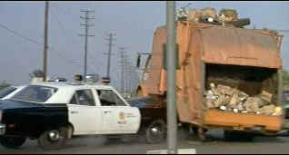

| Gone in 60
Seconds (SE)/B,B |
| Navarre/1974/98/WS
1.85 |
The DVD case brandishes the enticement "Let the Wrecking
Begin." Gone in 60 Seconds boasts the longest car chase sequence in my film memory.
While I love a good car chase like in The French Connection or The Corrupter, the
attraction of a protracted, full tilt demolition derby of a movie isn't likely to sucker me into
the home theater. To my delight, Gone in Sixty Seconds sets up its grand forty minute slamathon
with solid rhythmic plotting. Echoing a police procedural with documentary verisimilitude,
Halicki's script focuses on the minutiae of stealing cars. You might even want to use the script as
a curriculum blueprint for a car theft university .Don't skip the introduction by Denise Halicki,
the director's widow.. It provides interesting background that will help you appreciate the action
and stunts.
 |
| One of the many crashes ©Navarre |
A car theft ring operating around Los Angeles gets a Latin American
order for 48 specified cars ranging from a yellow mustang to a variety of exotics and Rolls Royces
to be delivered in a couple of days. A tall order indeed! Maindrian Pace is the auto
insurance investigator by day and the leader of the ring. With methodical plotting, Pace's team of
chop shoppers and slick drivers assemble every car and ready them for delivery. The one defining
moral code of the theft ring is every stolen car must be insured. When the final count is done, one
car, a yellow mustang code-named Eleanor, is uninsured. Is morality a fatal flaw for a car ring.
You'll have to cut to the chase to find out.
There's a lot of dubbed dialogue overlapping the procedural scenes, but it works quite
well. Don't look for a slick Hollywood production. But this is high energy movie making. Camera
work by Jack Vacek keeps you tightly buckled in the driver's seat for maximum excitement. You might
expect a rougher visual look, but the chase may be rocky in concept but its stable in delivery.
Not only doe Halicki do the "triple" behind the camera, he's the star
and driver supreme of Gone in 60 Seconds. Halicki is effectively laconic and methodical in
portraying Maindrian. Behind the wheel, Halicki is ruthlessly persistent in his pursuit of
excitement.
The transfer elements for this special edition DVD appear to be in very good
shape. Images are mostly sharp, though there are some scenes far too soft, likely owing to camera
work. The image does not appear to be overworked. Edges are clean. The color is very good. Grain is
tightly defined and stable. Flesh tones are a tad pasty, but blacks are lush and rich. Considering
all the motion in this film, it's remarkable that it looks this good. The sound is delivered in a
variety of shapes. The DTS 5:1 surround is bright and sassy, with good bass extension providing
plenty of low throttle activity.
The special edition includes audio commentary from cinematographer Jack
Vacek and Editor Warner Leighton. Vacek's comments sound like they were produced in an echo
chamber, or perhaps through a speaker phone. Not at all pleasing. There are interviews with a
number of car celebrities who knew Halicki. The best is with Lee Iacocca, part of the team that
introduced Ford's Mustang to the world, the car that played such an important role in Gone in
Sixty Seconds. There's also some additional car footage not used in the film and several
trailers. You even get to see the remnants of mustang Eleanor still exercising her throttle under
reckless guidance. Several trailers and a photo gallery complete the package.
|
|
|
|

Selections from the feature archive include articles on Akira Kurosawa,
Frank Darabont, Blonde Bimbos, Hollywood
Street Gangs, or Vietnam:
The Hollywood Pariah, and many more...
Robert A. Harris

Tilting at Hollywood
He's part of the dynamic duo that restored Lawrence
of Arabia, Spartacus, My Fair Lady and Vertigo. Harris rides a white horse into the for the cause
of preserving our film legacy. Click on the image to read more.


DVDPlanet is the DVD
incarnation of legendary laser retailer Ken Crane's. Deep discounts and serious service.

The National Film Preservation Foundation (NFPF) is the nonprofit organization created by the U.S. Congress to save
America's film heritage.

Information on film sound in theaters and home theaters. Lots of helpful information provided in a
handsome interface.

Elegant DVD portal with news, reviews, links and information
galore.
Imaging Science Foundation
The Imaging Science Foundation promotes proper standards in home theater viewing. ISF trained
technicians offer monitor calibration services to consumers. The difference in a properly
calibrated monitor can be astounding. Click on the image to find an ISF member near you.

The
Movie Poster Archive includes extensive poster images from the films of stars like Susan Hayward,
Kirk Douglas, Katharine Hepburn and many more. Our featured star is James Stewart
|